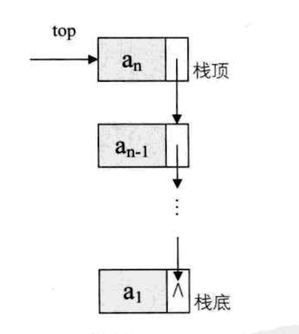
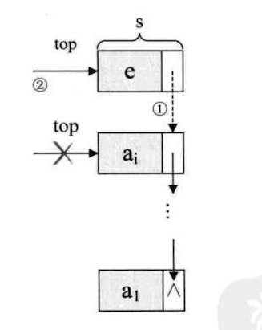
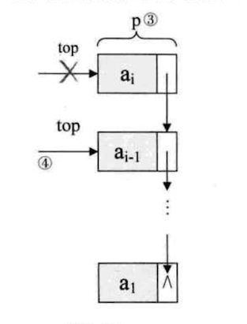
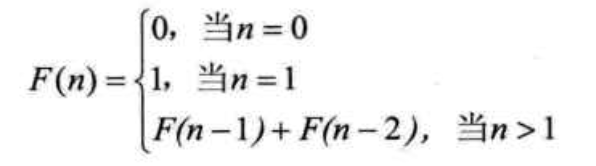

顺序栈
栈（stack）是限定仅在表尾进行插入和删除操作的线性表。
栈的结构定义：
1 | typedef int SElemType; /* SElemType 类型根据实际情况而定，这里假设为 int */ |
压栈操作：
1 | /*插入元素 e 为新的栈顶元素*/ |
出栈操作：
1 | /*若栈不空，则删除 S 的栈顶元素，用 e 返回其值，并返回 OK；否则返回 ERROR*/ |
链栈

链栈的结构代码：
1 | typedef struct StackNode |
链栈的操作大部分和单链表类似，只是在插入和删除上，特殊一下。
对于链栈的进栈 push 操作，假设元素值为 e 的新结点是 s，top 为栈顶指针，如下图所示：

1 | /*插入元素 e 为新的栈顶元素*/ |
链栈的出栈操作

1 | /* 若栈不空，则删除 S 的栈顶元素， 用 e 返回其值，并返回 OK；否则返回 ERROR */ |
如果栈的使用过程中元素变化不可预料，有时很小，有时非常大，那么最好是用栈链，反之，如果它的变化在可控范围内，建议使用顺序栈会更好一些。
栈的应用 —— 递归
经典递归例子： 斐波那契数列（Fibonacci）
为了说明这个数列，这位斐老还举了一个很形象的例子。
说如果兔子在出生两个月后，就有繁杂能力，一对兔子每个月能生出一对小兔子来。假设所有兔都不死，那么一年后可以繁殖多少对兔子呢？
我们拿出新出生的一对小兔子分析一下：第一个月小兔子没有繁殖能力，所以还是一对；两个月后，生下一对小兔子数共有两对；三个月以后，老兔子又生下下一对，因为小兔子还没有繁殖能力，所以一共是三对…..依次类推可以列出下表
| 所经过的月数 | 1 | 2 | 3 | 4 | 5 | 6 | 7 | 8 | 9 | 10 | 11 | 12 | |
|---|---|---|---|---|---|---|---|---|---|---|---|---|---|
| 兔子对数 | 1 | 1 | 2 | 3 | 5 | 8 | 13 | 21 | 34 | 55 | 89 | 144 |
表中数字 1，1，2，3，5，8，13，…….构成了一个序列。这个数列有个十分明显的特点，，那是：前面相邻两项之和，构成了后一项。用公式可概况为：

先考虑一下，如果我们要实现这样的数列用常规的迭代的方法如何实现？假设我们需要打印出前 40 位的斐波那契数列。代码如下：
1 | int main() |
代码很简单，不用做任何解释。但其实我们的代码，如果用递归来实现，还可以更简单。
1 | /* 斐波那契的递归函数 */ |
怎么样，相比较迭代的代码，是不是干净很多。
每个递归定义必须至少有一个条件，满足时递归不再进行，即不再引用自身而返回退出。
栈的应用 —— 四则运算表达式求值
后缀表达法是一种不需要括号的表达法，也叫做逆波兰（Reverse Polish Notation,RPN）。
用后缀表达法求 “9 +（3-1）*3 + 10/2” 的值。
首先将上式转化为后缀表达式：“931-1*+102/+”
规则：从左到右遍历表达式的每个数字和符号，遇到是数字就进栈，遇到是符号，就将处于栈顶的两个数字出栈，进行运算，运算结果进栈，一直到最终获得结果。
通过以上规则很容易就能计算出等于 20。
计算虽然简单，但有一点疑问，后缀表达式：“931-1*+102/+” 是如何推导出来的？
中缀表达式 “9 +（3-1）*3 + 10/2” 转化为后缀表达式 “931-1*+102/+”
规则：从左到右遍历中缀表达式的每个数字和符号，若是数字就输出，即成为后缀表达式的一部分；若是符号，则判断其于栈顶符号的优先级，是右括号或者优先级低于栈顶符号（乘除优先加减）则栈顶元素依次出栈并输出，并将当前符号进栈，一直到最终输出后缀表达式为止。
看了规则几遍之后自己推导还是推导不出来，所以还是记录一下详细步骤吧。
- 初始化一空栈，用来对符号进出栈使用。
- 第一个字符数字是 9 ，输出 9，后面符号 “+”，进栈。
- 第三个字符 “(” ，依然是符号，因其只是左括号，还未配对，故进栈。
- 第四个字符数字是 3，输出，总表达式为 93，接着是 “-”，进栈。
- 接下来是数字 1，输出，总表达式为 931 ，后面符号 “)”，此时，我们需要去匹配此前的 “(“，所以栈顶依次出栈，并输出，直到 “(“ 出栈为止。此时左括号上方只有 “-“，因此输出 “-“。总的输出表达式为 931- 。
- 接着是数字 3，输出，总的表达式为 931-3 。紧接着是符号 ““，因为此时的栈顶符号为 “+” 号，优先级低于 “\“，因此不输出，”*“进栈。
- 之后是符号 “+”，此时当前栈顶元素 ““ 比这个 “+” 的优先级高，因此栈中元素出栈并输出(没有比 “+” 号更低的优先级，所以全部出栈)，总输出表达式为 931-3\+ 。然后将当前这个符号 “+” 进栈。
- 紧接着数字 10，输出，总表达式变为 931-3*+10，后是符号 “/“，所以 “/“ 进栈。
- 最后一个数字 2 ，输出，总的表达式为 931-3*+102 。
- 因已经到最后，所以将栈中符号全部出栈并输出。最终输出的后缀表达式结果为 931-3*+102/+ 。